Chapter 13 Visualisations
We now have a general feel for our data, but what does it look like? Visualising data is one of the most important tasks facing the data analyst. It’s important to be able to display your data clearly and coherently, as it makes you and the reader easier to understand. Plus, it helps you to understand the data.
13.1 Simple Plots
Before we get into using specialised graphics, let’s start by drawing a few very simple graphs to get a feel for what it’s like to draw pictures using R.
13.1.1 Using plot()
Lets create a small vector Fibonacci that contains a few numbers we’d like R to draw for us. Then, we’ll ask R to plot() those numbers:
Fibonacci <- c(1, 1, 2, 3, 5, 8, 13, 21, 34)
plot(Fibonacci)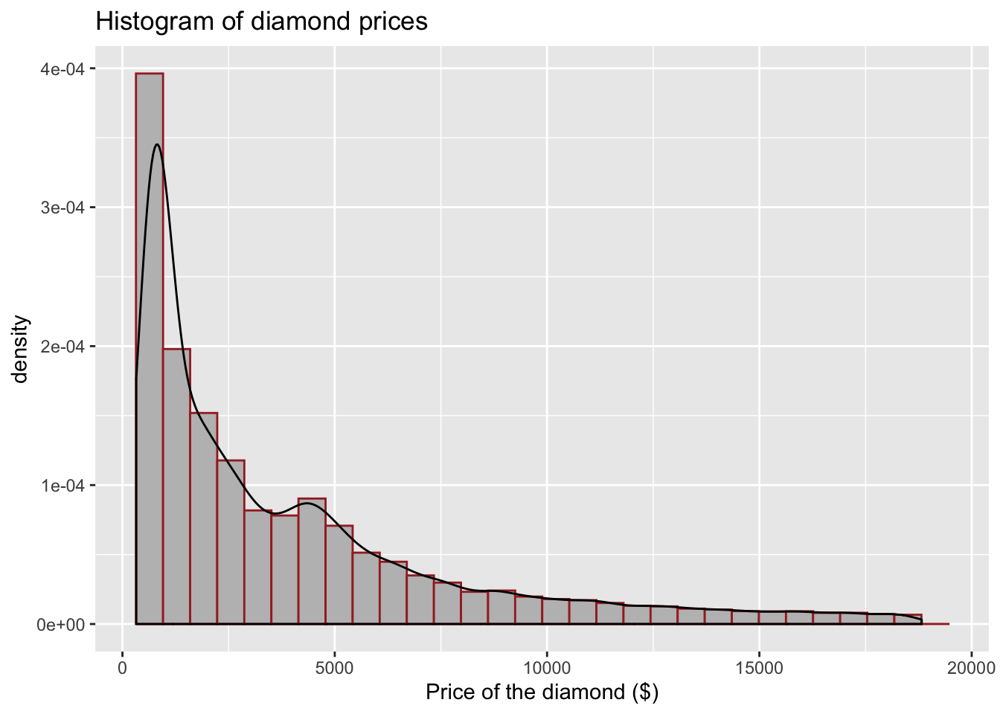
As you can see, what R has done is plot the values stored in the Fibonacci variable on the vertical axis (y-axis) and the corresponding index on the horizontal axis (x-axis). In other words, since the 4th element of the vector has a value of 3, we get a dot plotted at the location (4,3).
The important thing to note when using the plot() function, is that it’s behaviour changes depending on what kind of input you give it.
13.2 Customising Plots
13.2.1 Labels
One of the first things that you’ll find yourself wanting to do when customising your plot is to label it better. The arguments that you need to specify to make this happen are:
main: A character string containing the title.sub: A character string containing the subtitle.xlab: A character string containing the x-axis label.ylab: A character string containing the y-axis label.
plot(Fibonacci,
main = "Main title goes here",
sub = "The subtitle appears here!",
xlab = "The x-axis label",
ylab = "The y-axis label"
)
Don’t like the look of the plot? Then let’s change it up!
There are lots of graphical parameters that you can change in R, below we will cover the most common.
- Font styles:
font.main,font.sub,font.lab,font.axis - Font colours:
col.main,col.sub,col.lab,col.axis - Font size:
cex.main,cex.sub,cex.lab,cex.axis
Let’s use some of the above to make changes to our plot:
plot(Fibonacci,
main = "Main title goes here",
sub = "The subtitle appears here!",
xlab = "The x-axis label",
ylab = "The y-axis label",
font.main = 1, # plain text for title
cex.main = 1, # normal size for title
font.axis = 2, # bold text for numbering
col.lab = "red" # red colour for axis labels
)
13.2.2 Plot Type
But wait! There’s a lot more customisation you can do… you can also customise the appearance of the actual plot!
type = "p". Draw the points only.type = "l". Draw a line through the points.type = "o". Draw the line over the top of the points.type = "b". Draw both points and lines, but don’t over plot.type = "h". Draw “histogram-like” vertical bars.type = "s". Draw a staircase, going horizontally then vertically.type = "S". Draw a Staircase, going vertically then horizontally.type = "c". Draw only the connecting lines from the “b” version.type = "n". Draw nothing.
The simplest way to illustrate what each of these really looks like is just to draw them, so have a go! Just add in the type = " " argument into your code, and re-run it.
plot(Fibonacci,
type = "b",
main = "Main title goes here",
sub = "The subtitle appears here!",
xlab = "The x-axis label",
ylab = "The y-axis label",
font.main = 1, # plain text for title
cex.main = 1, # normal size for title
font.axis = 2, # bold text for numbering
col.lab = "red" # red colour for axis labels
)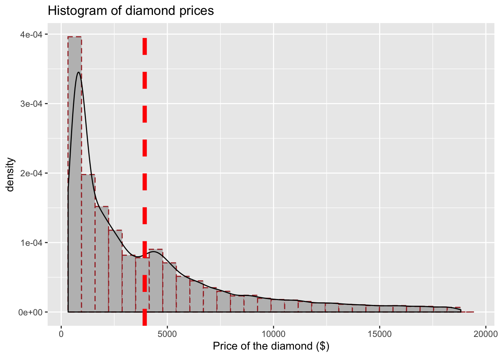
13.2.3 Other Customisable Features
There’s even more that you can customise too:
- Colour of the plot: the
colparameter will do this for you e.g.col="blue" - Character of plot points: the
pchparameter. This tellsRwhat symbol to use to draw the points on the plot e.g.pch=12 - Plot size: the
cexparameter is used to change the size of your symbols e.g.cex=2 - Line type: the
ltyparameter is used to tellRwhich type of line to draw. You can either specify using a number between0and1, or by using a meaningful character string e.g.blank,dashed,solid,dotdash - Line width: the
lwdparameter can be used to specify the width of a line e.g.lwd=3
Try some of these changes out on your plots!
plot(Fibonacci,
type = "b",
main = "Main title goes here",
sub = "The subtitle appears here!",
xlab = "The x-axis label",
ylab = "The y-axis label",
font.main = 1, # plain text for title
cex.main = 1, # normal size for title
font.axis = 2, # bold text for numbering
col.lab = "red", # red colour for axis labels
col = "green", # green colour
pch = 19, # plot character is a solid circle
cex = 3, # plot is 2x normal size
lty = 2, # dashed line
lwd = 5 # line width 5x normal width
)
13.2.4 Change Axes
- Change plot axis scales: the
xlimandylimparameters will do this for you e.g.xlim=c(0, 10) - Suppress labeling: the
annparameter can be used if you don’t want R to label any axis, just set it to false e.g.ann=FALSE - Suppress axis drawing: the
axesparameter is used when you don’t want R to draw any axes e.g.axes=FALSE. You can suppress the axes individually using thexantandyantarguments e.g.xant = "n". - Label orientation: the
lasparameter allows you to customise the orientation of the text used to label the individual tick marks e.g.las=2
plot(Fibonacci,
type = "b",
main = "Main title goes here",
sub = "The subtitle appears here!",
xlab = "The x-axis label",
ylab = "The y-axis label",
font.main = 1, # plain text for title
cex.main = 1, # normal size for title
font.axis = 2, # bold text for numbering
col.lab = "red", # red colour for axis labels
col = "green", # green colour
pch = 19, # plot character is a solid circle
cex = 3, # plot is 2x normal size
lty = 2, # dashed line
lwd = 5, # line width 5x normal width
xlim = c(0, 20), # x-axis min and max values
ylim = c(0, 50), # y-axis min and max values
las = 2 # changed orientation of text
)
13.3 Don’t Panic!
You might be thinking, “geez, is it really that difficult to draw a simple plot!?” The answer is no. We have covered the majority of customisations that you can do, but chances are in reality you’ll use relatively few of these arguments. It’s just useful to see what you are able to do with the simple plot() function.
13.4 Other Simple Plots
13.4.1 Histograms
Histograms are simple and useful ways to visualise data, and make most sense to use when you have interval or ratio scale data.
hist(Fibonacci)
hist(Fibonacci, breaks = 3) #add in number of bins
hist(Fibonacci, breaks = 1:40) #add in where breaks should start and finish
You can of course customise your histogram:
- Shading lines: the
densityandanglearguments will allow you to: (1) add diagonal lines to your bars, and (2) indicate the angle of the lines e.g.density = 1andangle = 45 - Colours: like
plot(), you can use thecolparameter to change the colour of the shading of the interiors of the bars. You can also use theborderargument to set the colour of the bar borders - Labels: you can label each of the bars in your histogram using the
labelsargument. You can either writelabels = TRUE, or you can choose the labels yourself, by giving a vector of strings e.g.lables = c("Label 1", "Label 2")
Try adding some of these components to your histogram.
hist(Fibonacci,
breaks = 15, #add in number of bins
density = 5, #5 shading lines per inch
angle = 75, #angle of 75 degrees for shading lines
border = "blue", #set border colour to blue
col = "red", #set colour of shading lines
labels = TRUE, #add frequency labels to the bars
ylim = c(0,5) #y-axis min and max
)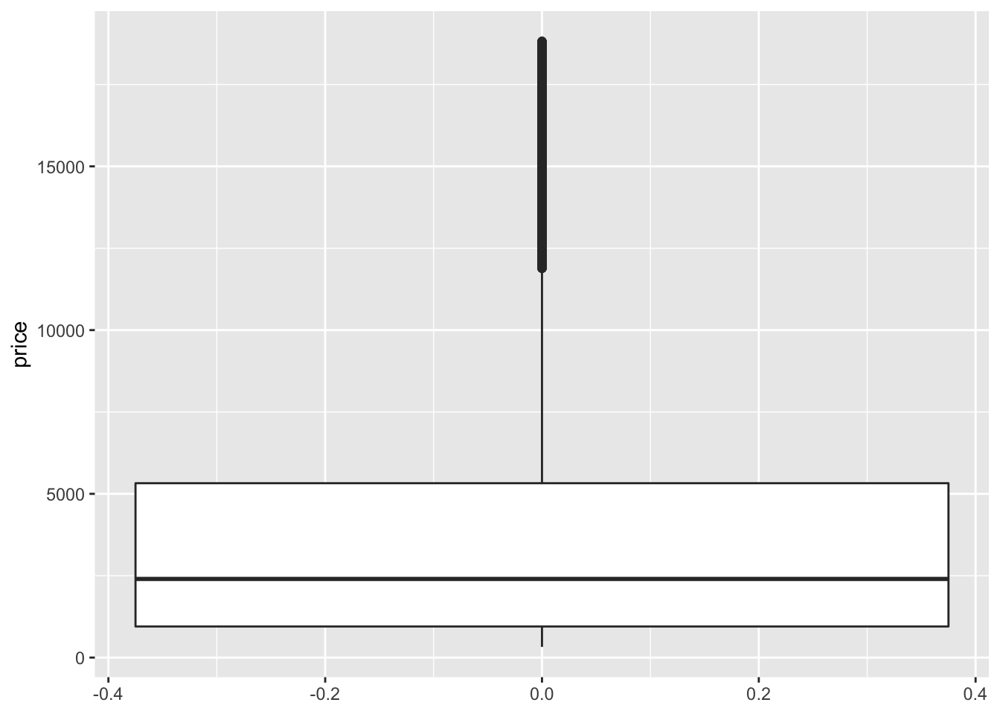
13.4.2 Boxplots
Boxplots are another useful way of visualising interval or ratio data. They provide you with the information that you see when using the summary() function, and are useful for providing a visual illustration of the median, interquartile range, and the overall range of data.
boxplot(Fibonacci)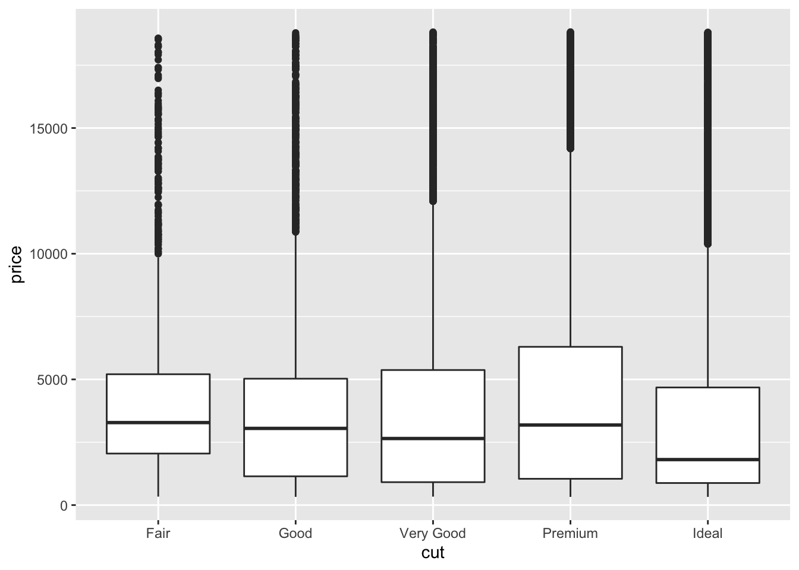
summary(Fibonacci)## Min. 1st Qu. Median Mean 3rd Qu. Max.
## 1.000 2.000 5.000 9.778 13.000 34.000There you have it - your first boxplot. But why is there a circle at the top? It’s because, by default, R highlights cases that are 1.5x the interquartle range. That means that the top whisker is pulled back to the next highest value that is within the range. You can change this, by specifying the range argument.
boxplot(Fibonacci, range = 2)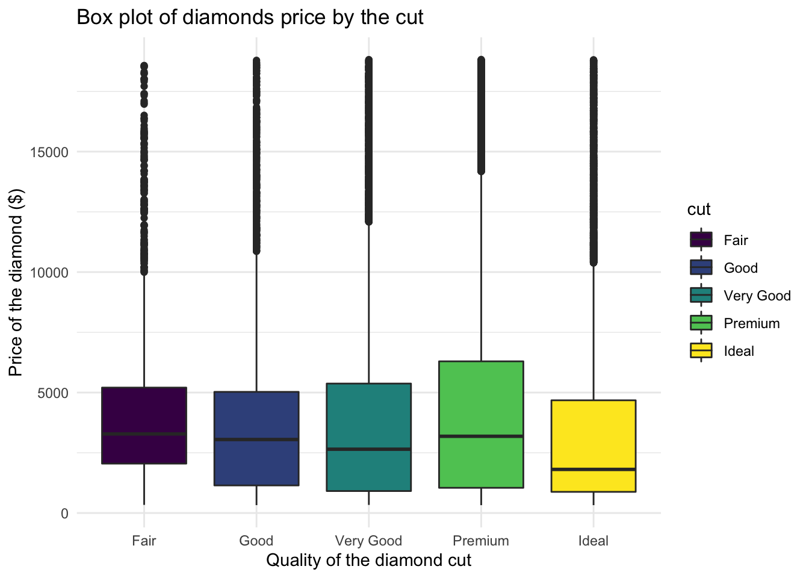
13.4.2.1 Customising Boxplots
There are (of course) lots of ways that you can customise your boxplots. You can change the width of various parts of the plots, change the line-types, -colours, and -widths, change the fill and background colours, and change the point characters and expansions. You can also change the orientation of the plot, as well as the width of each box so that they are proportional to your data. You can use the R help function to see how to make these customisations.
?boxplot
boxplot(Fibonacci,
boxlwd = 2, # box line width 2
whisklwd = 5, # whisker line width 5
outlwd = 2, # outlier line width 2
boxlty = 2, # dashed box line
staplecol = "blue",
medcol = "green",
boxfill = "yellow",
outpch = 5,
varwidth = T,
horizontal = T
)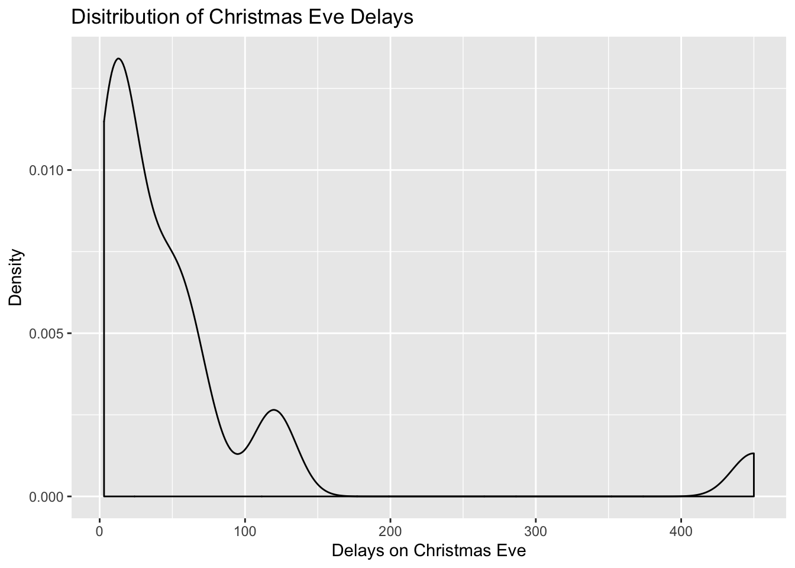
13.4.3 Scatterplots
We’ve already created an example of a scatterplot - the original Fibonacci graph when you used the plot() function. Scatterplots can be really useful tools in data visualisation, especially when looking at the relationship between variables.
Let’s use some the data data you created earlier. Just to remind yourself of whats in there, head the mydata.
head(mydata)## age sex group score
## 1 20 male low 70
## 2 22 male low 89
## 3 49 male low 56
## 4 41 male low 60
## 5 35 male high 68
## 6 47 female high 62Now, lets look at the relationship between age and score. We again will use the plot() function, and specify the x (age) and y (score) variables that we want plotted:
plot(mydata$age, mydata$score)
We can do better than this plot with all the fancy tricks we learned above! Try to give the plot a main title, axis labels, and change the colour of the dots too.
plot(mydata$age, mydata$score,
main = "Relationship between Age and Score",
xlab = "Age",
ylab = "Score",
col = "green",
pch = 12
)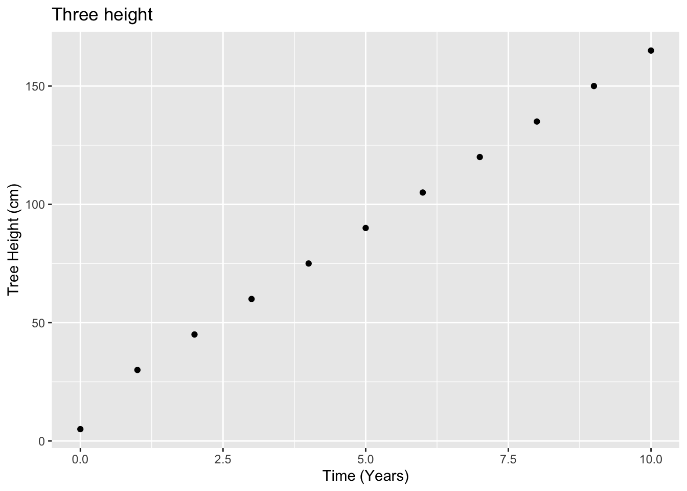
We can see that there seems to be a negative relationship between age and score - as age increases, score decreases. You might want to get R to draw a nice clean straight line to highlight this trajectory, and one way to do so is by using the scatterplot function within the car package. Before you use this function, you will need to install and load the package.
library(car)## Loading required package: carData##
## Attaching package: 'car'## The following object is masked from 'package:psych':
##
## logitWe can now use the function.
scatterplot(mydata$age, mydata$score, smooth = F) #smooth stops R from drawing a fancy "smoothed" trendline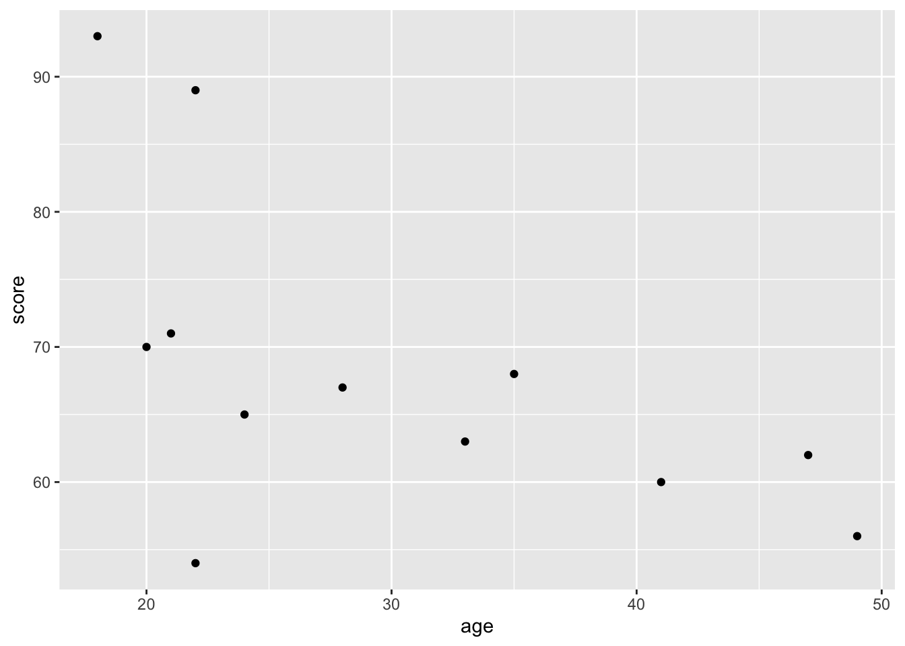
As well as a scatterplot, R has also given us boxplots for each of the two variables, as well as a line of best fit to show the relationship between the two variables. You can also fit an abline in a normal plot, and you’ll see an example of this at a later time.
pairs(mydata)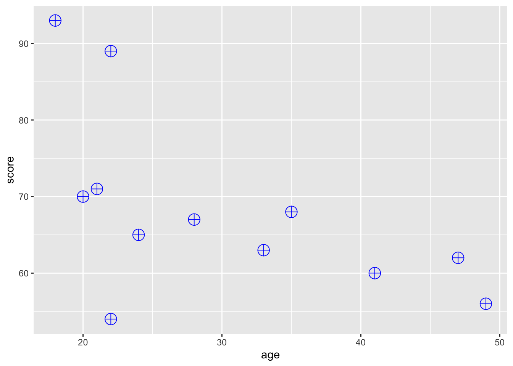
13.5 How to Save Image Files
In RStudio, the easiest way to save an image is to click Export in the Plot panel. You can then either “Save Plot as PDF” or “Save Plot as image”. Of course, there is also a way to write code to tell R to do this for you, it just involves a couple of extra steps.
# 1. Open png file
png("rplot.png")
# 2. Create the plot
scatterplot(mydata$age, mydata$score, smooth = F)
# 3. Close the file
dev.off()## quartz_off_screen
## 2There you have it! You should now have a plot saved in the directory you are working in.
13.6 Plotting with ggplot2
A little earlier on, we installed and loaded the ggplot2 package that I said we’d use later for visualising data. That time has now come!
ggplot2 provides two main plotting functions: qplot() for quick plots useful for data exploration and ggplot() for fully customisable publication-quality plots.
Let’s first look at qplot().
If we give it a single numeric vector (or column), we will get a histogram:
qplot(mydata$score)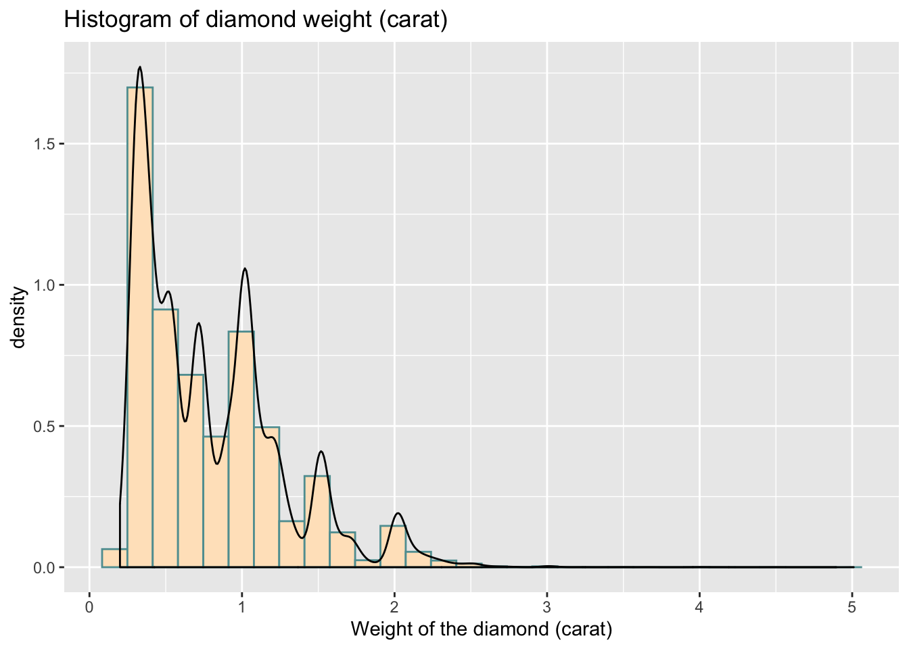
If we give it a categorical variable (character vector or factor), it will give us a bar chart:
qplot(mydata$sex)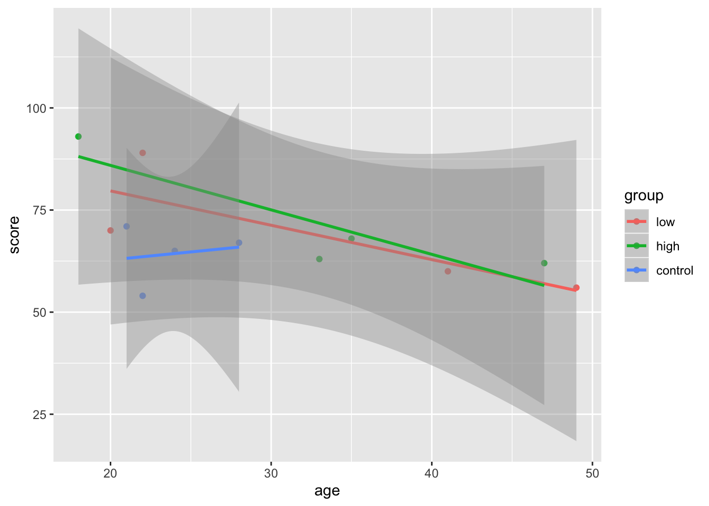
If we give it two continuous variables, it will give us a scatterplot:
qplot(mydata$age, mydata$score)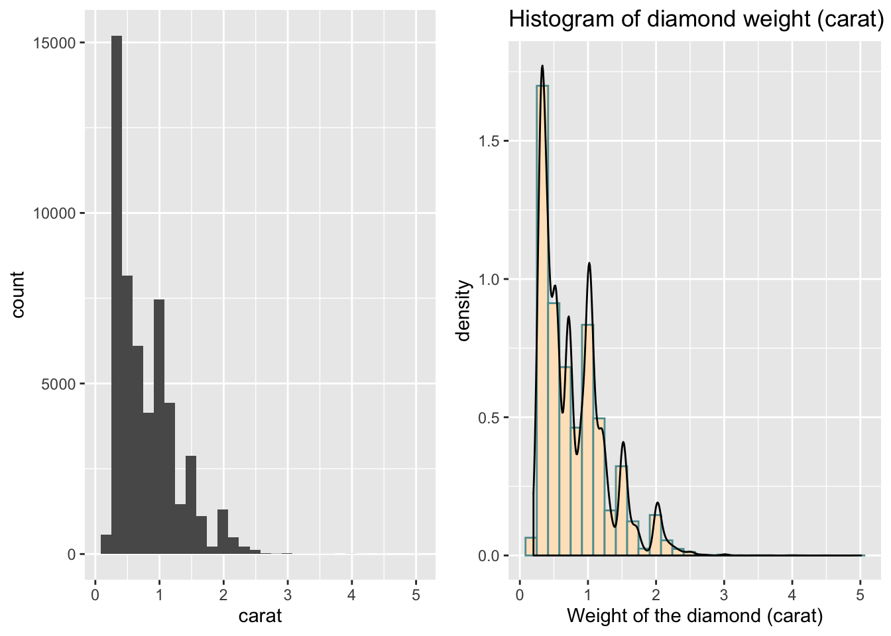
The geom = argument specifies which plotting element (geom) to use. For instance, if we want a boxplot of a continuous variable by categorical variable, we can do:
qplot(mydata$group, mydata$score, geom = "boxplot")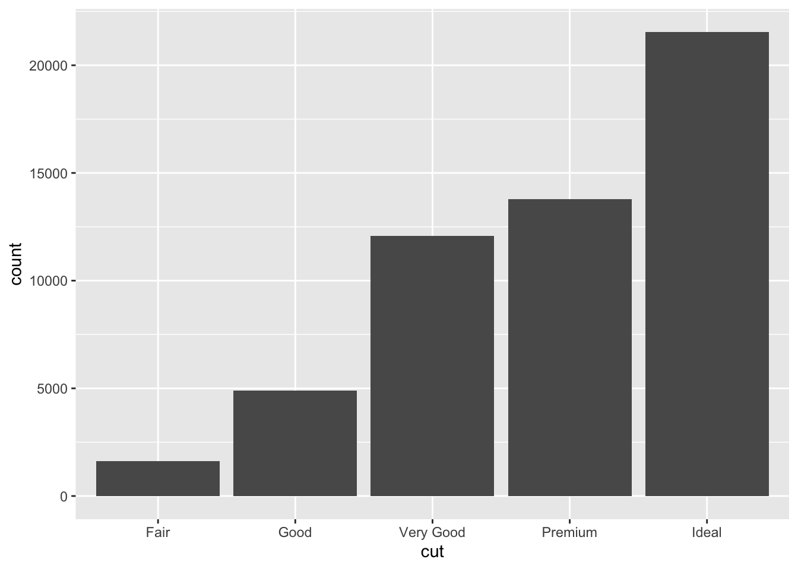
You can specify several geoms in a single qplot. For example, we may want to overlay a regression line over our scatterplot showing the relationship between age and score. To do this, we need to tell qplot() to use both geom point and geom smooth.
qplot(mydata$age, mydata$score, geom = c("point", "smooth"))## `geom_smooth()` using method = 'loess' and formula 'y ~ x'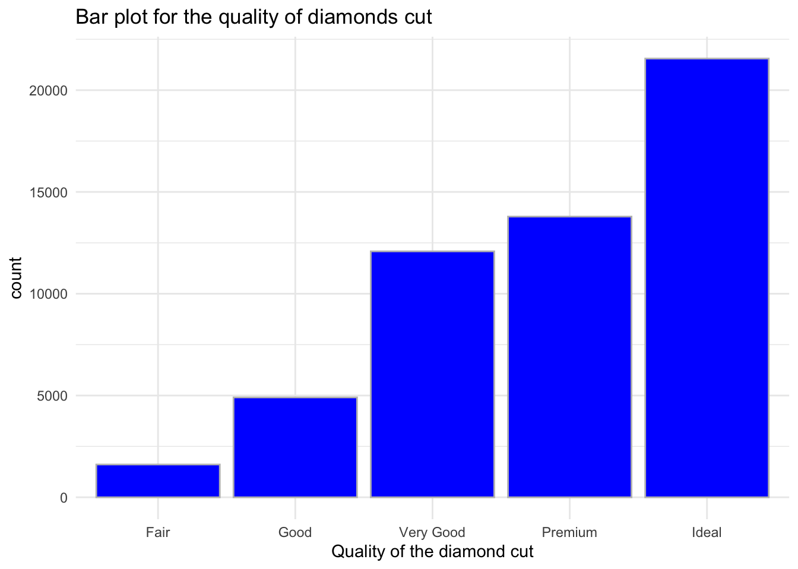
13.6.1 ggplot()
Using these plots is a little different from what we’ve seen so far and there are 3 key things to keep in mind 1) aesthetic: what you want to graph (e.g. x, y, z); 2) geom: how you want to graph it; and 3) optional extras - titles, themes, backgrounds etc.
Unlike qplot(), plots with ggplot() are constructed in a layered fashion. The bottom layer constructs the plotting space to which you then add layers of geoms, legends, axes, and what not.
Everything can be customised, such as the geometries you apply to your plot:
For one variable:
* + geom_dotplot() adds a dotplot geometry to the graph.
* + geom_histogram() adds a histogram geometry to the graph.
* + geom_violin() adds a violin plot geometry to the graph.
For two variables:
* + geom_point() adds a point (scatterplot) geometry to the graph.
* + geom_smooth() adds a smoother to the graph.
13.6.2 Iris Example
ggplot() has pre-saved data within the package. Let’s make use of this for the time being as we take a look at what `ggplot()’ can do.
head(iris) #see what data we have ## Sepal.Length Sepal.Width Petal.Length Petal.Width Species
## 1 5.1 3.5 1.4 0.2 setosa
## 2 4.9 3.0 1.4 0.2 setosa
## 3 4.7 3.2 1.3 0.2 setosa
## 4 4.6 3.1 1.5 0.2 setosa
## 5 5.0 3.6 1.4 0.2 setosa
## 6 5.4 3.9 1.7 0.4 setosaA scatterplot:
ggplot(data=iris, aes(x = Sepal.Length, y = Sepal.Width)) +
geom_point(aes(color=Species, shape=Species)) +
xlab("Sepal Length") + ylab("Sepal Width") +
ggtitle("Sepal Length-Width")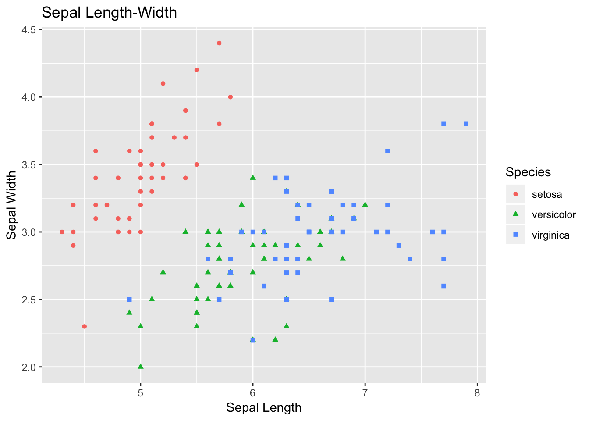
A boxplot:
ggplot(data=iris, aes(x=Species, y=Sepal.Length)) +
geom_boxplot(aes(fill=Species)) +
ylab("Sepal Length") + ggtitle("Iris Boxplot") +
stat_summary(fun.y=mean, geom="point", shape=5, size=4) 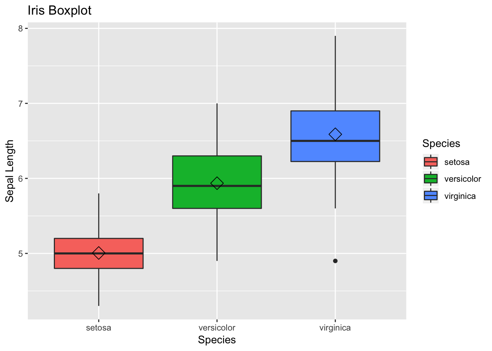
A histogram:
ggplot(data=iris, aes(x=Sepal.Width)) +
geom_histogram(binwidth=0.2, color="black", aes(fill=Species)) +
xlab("Sepal Width") +
ylab("Frequency") +
ggtitle("Histogram of Sepal Width")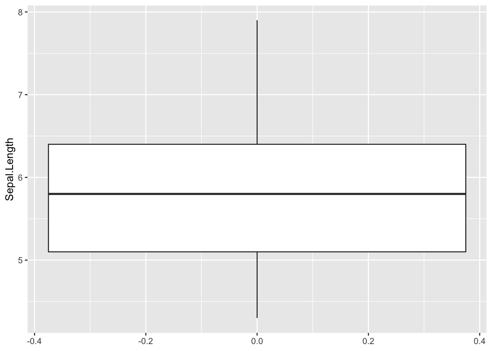
A violin plot:
ggplot(data=iris, aes(x = Sepal.Length)) +
stat_density(aes(ymax = ..density.., ymin = -..density..,
fill = Species, color = Species),
geom = "ribbon", position = "identity") +
facet_grid(. ~ Species) + coord_flip() + xlab("Sepal Length") 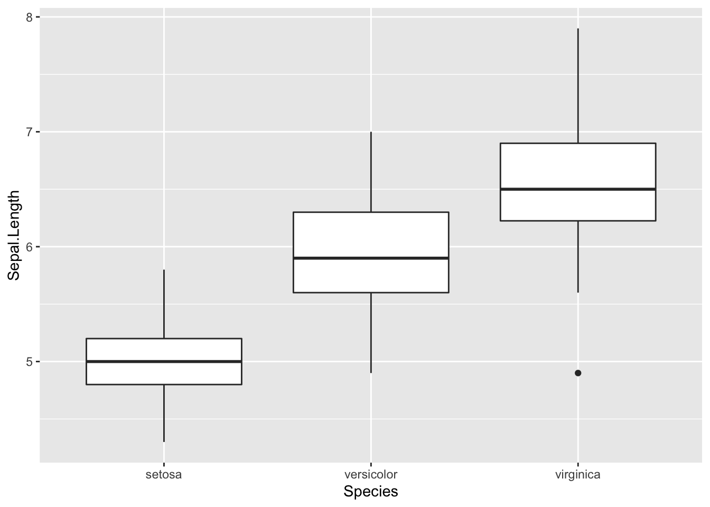
13.6.3 ggplot() with our mydata file
Let’s start with a simple histogram of the score variable:
ggplot(mydata, aes(score)) +
geom_histogram()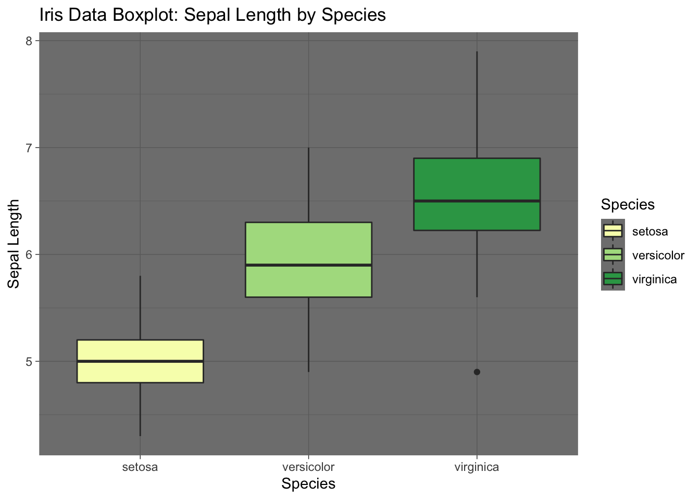
Now lets make a scatterplot:
ggplot(mydata, aes(age, score)) +
geom_point()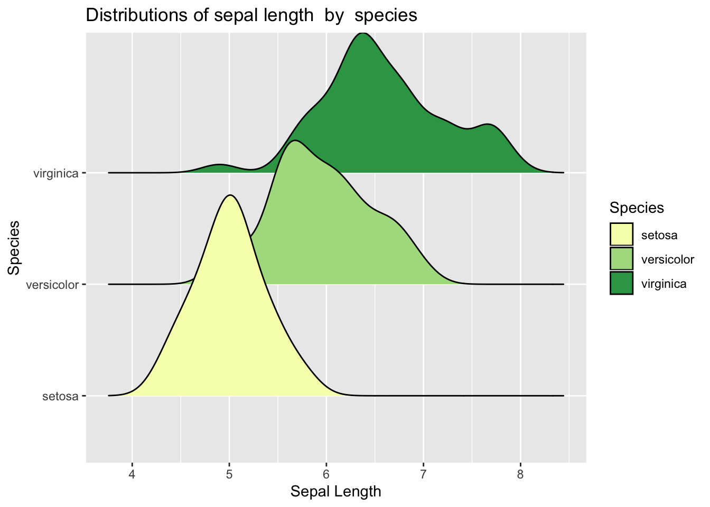
Like the simple plots, we can also customise. Lets change the colour, size, and shape of the points:
ggplot(mydata, aes(age, score)) +
geom_point(colour = "blue", size = 5, pch = 10)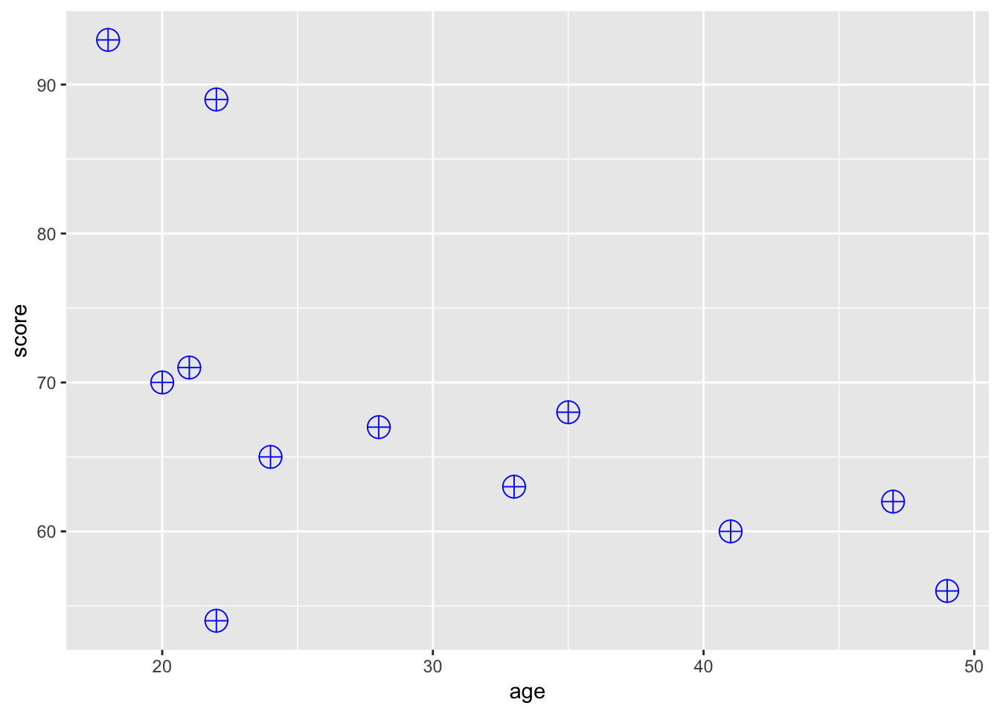
What if you want to colour the points by group? To do this, we need to specify colour as an aesthetic mapping it to the desired variable:
ggplot(mydata, aes(age, score)) +
geom_point(aes(colour = group))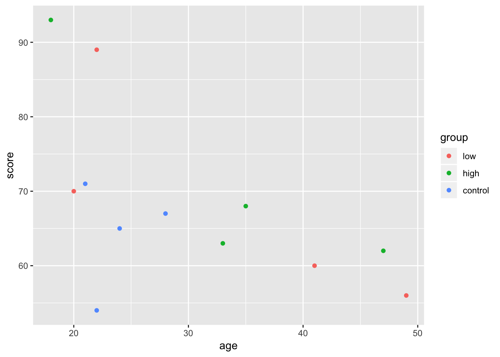
In this case, it doesn’t really matter if you put the individual aesthetics inside of the ggplot() or the geom_point() function. The difference is that whatever you put into the top layer (ggplot()) will get passed on to all the subsequent geoms, while the aesthetic you give to a particular geom will only apply to it. To illustrate this point, let’s add a regression line:
ggplot(mydata, aes(age, score)) +
geom_point(aes(colour = group)) + geom_smooth(method = "lm")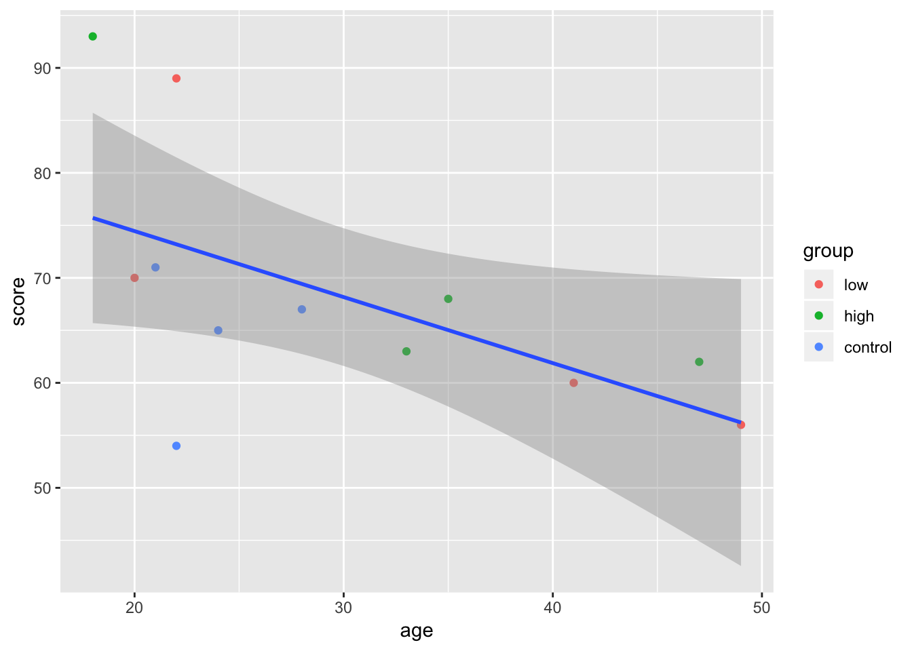
Note that the order of your arguments matter. Since colour = group is given to geom_point(), it doesn’t impact geom_smooth() which only draws one line. If we want geom_smooth to draw one line per group point, we can just move the colour = argument to the topmost ggplot() layer:
ggplot(mydata, aes(age, score, colour = group)) +
geom_point() + geom_smooth(method = "lm")
You can also store these plots as objects, and add more layers:
plot1 <- ggplot(mydata, aes(age, score, colour = group)) +
geom_point() + geom_smooth(method = "lm")
plot1 + geom_line() + theme_bw()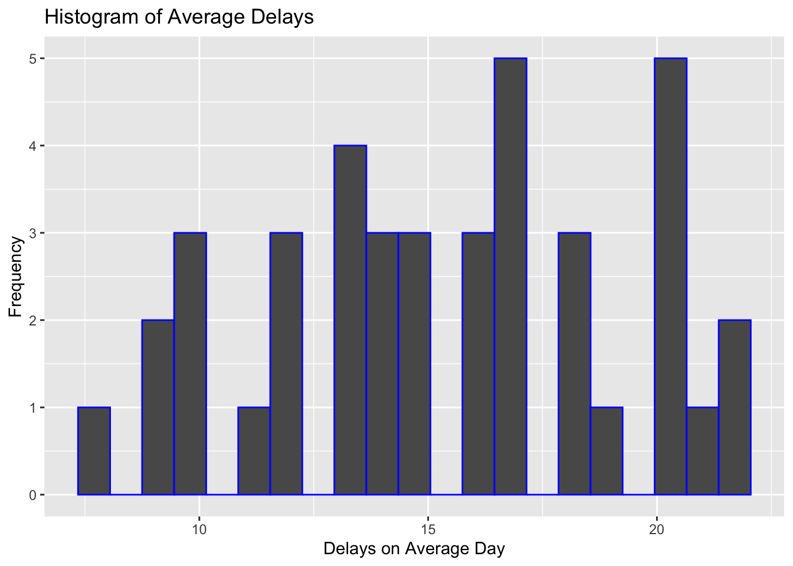
What about when we combine all of our variables onto the one plot?
ggplot(mydata, aes(x=age,y =score, colour = group)) +
geom_point(aes(shape=factor(sex)),size =2) +
scale_shape(solid=FALSE) +
geom_line() +
theme_bw()+
scale_color_manual(values=c("red","black", "green"))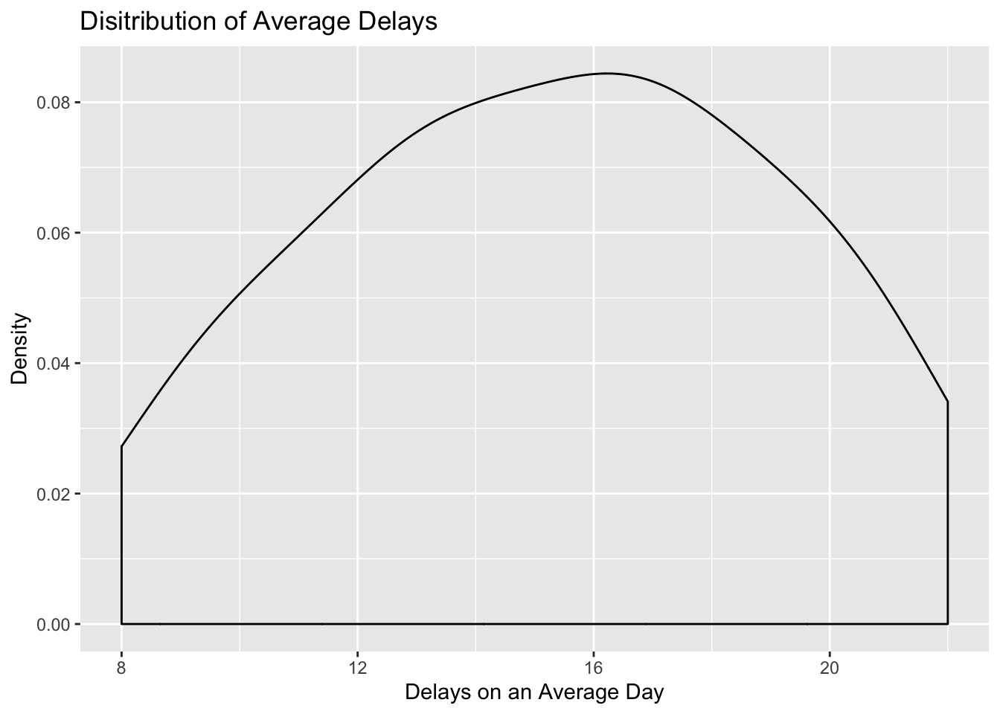
13.7 Bring It All Together
Let’s now work through an example together from the very start. We’ll be working with the animals.csv file.
#Step 1: Read in data
animals <- read.csv("animals.csv", header = T)
#Step 2: Load packages
library(psych)
library(ggplot2)
#Step 3: Data Familiarisation
str(animals)## 'data.frame': 40 obs. of 2 variables:
## $ animal: Factor w/ 4 levels "Cougar","Dog",..: 1 1 1 1 1 1 1 1 1 1 ...
## $ score : int 3 5 3 1 4 3 2 3 4 2 ...head(animals)## animal score
## 1 Cougar 3
## 2 Cougar 5
## 3 Cougar 3
## 4 Cougar 1
## 5 Cougar 4
## 6 Cougar 3summary(animals)## animal score
## Cougar :10 Min. : 1.00
## Dog :10 1st Qu.: 2.00
## HouseCat:10 Median : 5.00
## Wolf :10 Mean : 5.15
## 3rd Qu.: 8.00
## Max. :10.00#Step 4: Clean Data - max score is 9
animals1 <- scrub(animals, where = 2, min = rep(1, 40), max = rep(9, 40))
summary(animals1)## animal score
## Cougar :10 Min. :1.000
## Dog :10 1st Qu.:2.000
## HouseCat:10 Median :4.000
## Wolf :10 Mean :4.611
## 3rd Qu.:7.000
## Max. :9.000
## NA's :4#Step 5: Describe data
describe(animals1)## vars n mean sd median trimmed mad min max range skew kurtosis
## animal* 1 40 2.50 1.13 2.5 2.50 1.48 1 4 3 0.00 -1.44
## score 2 36 4.61 2.89 4.0 4.53 3.71 1 9 8 0.22 -1.52
## se
## animal* 0.18
## score 0.48describeBy(animals1$score, group = animals1$animal)##
## Descriptive statistics by group
## group: Cougar
## vars n mean sd median trimmed mad min max range skew kurtosis se
## X1 1 10 3 1.15 3 3 1.48 1 5 4 0 -0.97 0.37
## --------------------------------------------------------
## group: Dog
## vars n mean sd median trimmed mad min max range skew kurtosis se
## X1 1 6 8.5 0.84 9 8.5 0 7 9 2 -0.85 -1.17 0.34
## --------------------------------------------------------
## group: HouseCat
## vars n mean sd median trimmed mad min max range skew kurtosis se
## X1 1 10 1.6 0.7 1.5 1.5 0.74 1 3 2 0.56 -1.08 0.22
## --------------------------------------------------------
## group: Wolf
## vars n mean sd median trimmed mad min max range skew kurtosis se
## X1 1 10 6.9 1.2 7 6.88 1.48 5 9 4 0.17 -1.18 0.38#Step 6: Simple Visualisations
plot(animals1$score ~ animals1$animal,
xlab = "Animal",
ylab = "Score",
main = "Scores by Animal",
ylim=c(0,10)
)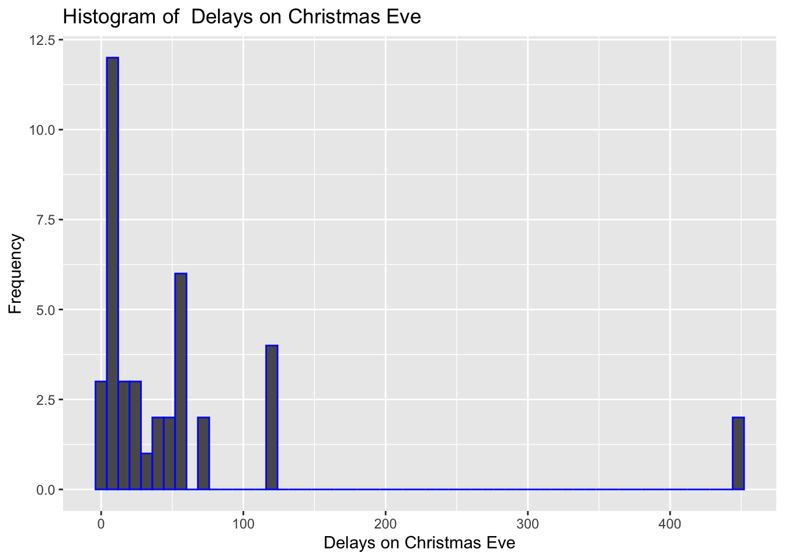
#Step 7: ggplot
ggplot(data = na.omit(subset(animals1, select = c(animal, score))), aes(x=animal, y=score, fill = animal))+
geom_boxplot() +
ggtitle("Scores by Animal") +
xlab("Animal") +
ylab("Score") +
labs(fill = "Type of Animal") +
ylim(0,10) +
theme_bw()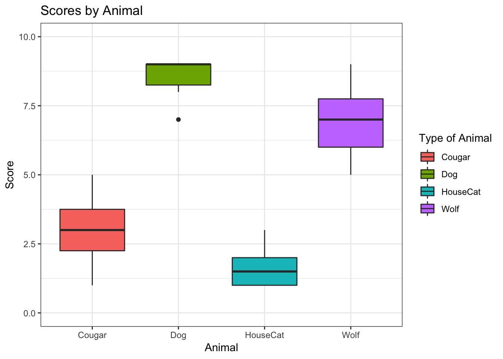
ggsave("myplot.png") # Save ggplot as png file## Saving 7 x 5 in image13.8 Write Out Files
The R base functions write.table() and write.csv()can be used to export a data frame or a matrix to a file. Try to write out your mydata and `animal1’ files using these two functions.
write.table(animals, "animals1.txt", sep= "\t")
write.csv(mydata, file = "mydata.csv")13.9 Questions
Basic rule for learning, and especially for programming life: If you don’t know it, Google it!. There are lots of helpful resources out there, you just need to look them up.
As you will have hopefully seen today, the best way to learn in R is to experiment and make mistakes. If you don’t understand what a line of code or a command is doing, play around with it to try and understand what its doing.